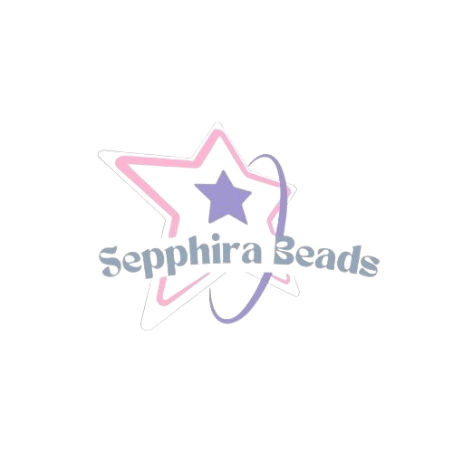
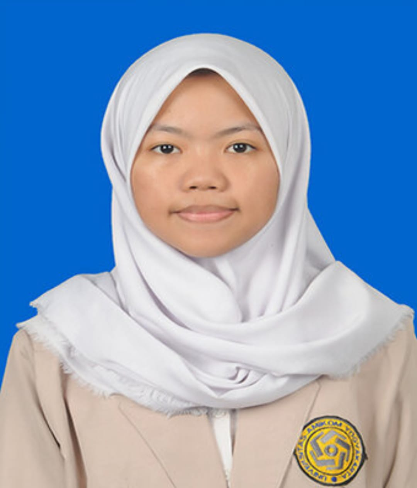

Sepphira adalah usaha kreatif di bidang fashion aksesoris yang fokus pada pembuatan dan penjualan produk berbahan dasar manik-manik (beads). Menargetkan perempuan dengan gaya unik, feminin, dan personal, Sepphira menghadirkan aksesoris handmade seperti gelang, cincin, strap handphone, gantungan kunci, bag charm, dan holder photocard dengan desain simple, elegan, dan dapat dikustomisasi sesuai keinginan pelanggan.
Menjadi brand aksesoris handmade terdepan yang mewakili gaya personal dan penuh makna bagi setiap pelanggan.
Sepphira Beads didirikan pada tahun 2025 sebagai inisiatif kewirausahaan kreatif dari tugas akhir mata kuliah E-Business Design. Berawal dari ide sederhana untuk menciptakan aksesoris wanita yang elegan, Sepphira Beads berkembang dengan semangat mahasiswa dalam memadukan estetika dengan pemberdayaan, memasarkan produk melalui media sosial dan e-commerce dengan antusiasme konsumen yang mendorong pengembangan desain dan kualitas secara konsisten.
Struktur organisasi Sepphira yang sederhana dan efisien mendukung proses produksi, pemasaran, dan pelayanan pelanggan.
CEO
Memimpin arah strategis perusahaan secara keseluruhan.
COO
Bertanggung jawab dalam mengelola operasional harian perusahaan.
CMO
Menangani strategi pemasaran dan promosi produk Sepphira.

CFO
Mengelola aspek keuangan perusahaan dengan efisien.